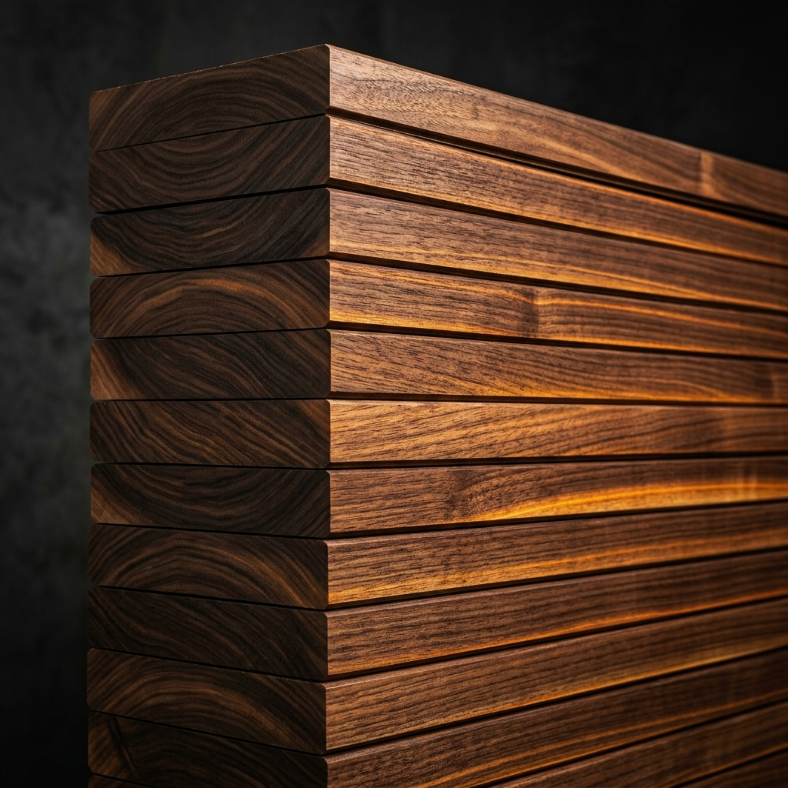

Engineering Old-Growth Quality at Plantation Speed
We bypass centuries of natural growth. Using CRISPR biotechnology and advanced densification, we guide fast-growing plantation trees to produce high-performance structural lumber with old-growth properties in under a decade.
Wood is not failing because nature poorly engineered it. It is failing because it was never engineered for us at all.
"Trees evolved to survive in ecosystems, decompose, and return nutrients to the soil. We cut them down, treat them with toxic chemicals, and build temporary shelters. Our systems assume wood is fragile."
Industrial construction demands the density, hardness, and stability of old-growth timber, but harvesting ancient forests is ecologically restricted and slow. Modern plantation wood grows fast but is porous, weak, and highly prone to warping and rot. We are forced to treat it with toxic chemicals to delay the inevitable.
BioCore redefines the relationship between growth and construction. By targeting specific genes, we direct the tree to grow wood designed for structural integrity, extreme density, and natural decay resistance from the moment it takes root. We transform forests from passive resources into active infrastructure.
Untreated Softwood
- Density: 400 - 500 kg/m³
- Bending Strength: ~50 - 80 MPa
- Microstructure: Porous, irregular cell-walls
- Vulnerability: Rot, fungi, termites, warping
- Defects: Frequent knots from natural branching
- Lifespan: High maintenance, decays in decades
BioCore Wood
- Density: 800 - 1000+ kg/m³ ↑
- Bending Strength: 120 - 150+ MPa ↑
- Microstructure: Thickened secondary cell walls
- Vulnerability: High decay & moisture resistance
- Defects: Straight, branch-suppressed trunks
- Lifespan: Structural stability for 300+ years
CRISPR Gene Engineering Dashboard
Toggle genes in our transgenic pipeline to see how cellular modifications reconstruct wood architecture from within.
Active Gene Targets
Select or hover over gene nodes to edit wood quality traits. Tissue-specific expression restricts edits strictly to developing xylem and cambium.
Ubiquitin Receptor Knockout
Loss-of-function edit increases cambial cell proliferation and wood volume.
4-Coumarate:CoA Ligase
Base editing downregulates lignin production by 13% - 35% to facilitate mechanical densification.
Gibberellin 20-Oxidase
Xylem-specific overexpression doubles biomass without structural defects.
Cellulose Synthase A Complex
Upregulation drives secondary cell-wall cellulose synthesis, increasing mechanical stiffness.
NAC/MYB Repressor
Upregulating this repressor decreases lignin composition while enhancing cell wall flexibility.
Strigolactone Pathway
Auxin and strigolactone optimization suppresses lateral branching for knot-free, straight timber.
Thermo-Mechanical Densification Simulator
Our genetic edits prime the wood's lignin matrix. Explore how combining moderate heat and mechanical compression structuralizes timber into lightweight, steel-strength monoliths.
Current Physical Properties
Comparative Material Performance
Accelerated timber matches the structural integrity of structural metals and concrete, without carbon-intensive manufacturing processes.
Accelerated Secondary Xylem
By overexpressing gibberellin synthesis genes (GA20ox) in xylem tissues, we double cambial growth rates. Our trees lay down wood fibers at unprecedented speed. We then utilize hot-press compaction to collapse the cell lumens, achieving the dense structure and load-bearing capacity of centuries-old growth in a fraction of the time.
Industrial Process Compatibility
Because we target branch suppression via MAX genes, we produce highly uniform trunks with fewer knots. This increases primary yield during peeling and sawing, reducing manufacturing waste and providing highly predictable engineered veneer sheets.
Engineering Pipeline
Biology operates on ecological timelines. Our multi-decade, venture-backed deployment model is structured in four clear phases.
Molecular Design & Tissue Culture
We transform Populus hybrid stem cells in sterile tissue cultures using multiplex CRISPR/Cas9. Guide RNAs target 4CL1 and DA1. Young saplings are assayed for expression and structural development in climate chambers before transplanting.
- CRISPR guide construct assembly
- Tissue cell transformation and regeneration
- Early genetic sequencing (DNA-Seq) verification
Accelerated Biomass Assays
Transgenic poplars and pines grow in closed containment greenhouses. Near-infrared spectroscopy monitors lignin reduction, cellulose accumulation, and early wood density. We harvest micro-core samples to test pilot thermo-mechanical densification.
- Growth kinetics modeling
- Micro-scale bending and hardness testing
- Thermal processing kiln calibration
Field Testing & Environmental Assessment
We plant high-density clones in controlled, small-scale field trials (0.5 to 1.0 hectare plots) under strict regulatory oversight. We monitor ecosystems for pollen drift, evaluate sterility vectors, and refine planting grids to optimize natural latewood rings.
- Establishment of regional trial plantations
- Biodiversity and insect interaction monitoring
- Intermediate core density analysis
Pilot Industrial Output
Full harvest of selected lines for structural lumber manufacture. We integrate output directly into construction supply chains and issue verified, long-duration carbon credits on international carbon markets.
- Construction grade engineering certification
- Commercial scale compression facility rollout
- Carbon accounting audit and registration

Constructing the next era of industrial materials.
Designed for durability. Grown for the future.
Genomic Specifications Database
Technical database detailing targeted gene sequences, expression outcomes, and verified field metrics across commercial candidate tree species.
| Gene / TF | Pathway Classification | Expression Modality | Expected Material Effect | Target Species |
|---|---|---|---|---|
| CesA (4/7/8) | Cellulose Synthesis | ↑ Upregulation | Increases cellulose microfibril content, thickens secondary cell-walls, and boosts density/stiffness. | Populus, Eucalyptus |
| SUSY / UGPase | Cellulose Precursors | ↑ Upregulation | Supplies UDP-glucose precursors to accelerate cell-wall mass deposition. | Populus |
| PAL, C4H, 4CL | Lignin Biosynthesis | ↓ Downregulation | Reduces total lignin content by 20% to 40% (Qi et al. 2024), shifting fiber ratio for easier mechanical compression. | Populus, Pine, Eucalyptus |
| HCT, CCoAOMT | Lignin Branching | ↓ Downregulation | Alters lignin composition (increases H-units), facilitating chemical processing and thermal binding. | Pinus radiata, Populus |
| CCR, CAD | Monolignol Reduction | ↓ Partial Downregulation | Drops lignin but accumulates aldehydes. Requires strict tissue-specific xylem control to avoid dwarfism. | Pinus radiata |
| F5H, COMT | Syringyl/Guaiacyl Ratio | ↕ Modulation | Increases S-monolignol units relative to G-units to reduce cross-linking stiffness for easier pulping/densification. | Populus, Eucalyptus |
| NAC (SND1/WND) | Secondary Wall Regulator | ↑ Xylem-Specific Upregulation | Acts as a master switch to stimulate multiple secondary wall synthesis pathways simultaneously. | Populus |
| PtrMYB221 | Transcriptional Repression | ↑ Upregulation | Represses lignin synthesis specifically, dropping lignin ~16% while preserving growth vigor (Cho et al. 2018). | Populus |
| DA1 (CRISPR KO) | Cambial Growth Regulation | ↓ Complete Knockout | Increases cambial activity, boosting xylem (wood) thickness, sugar release, and biomass yield (Tang et al. 2025). | Populus |
| WOX4 | Cambium Stem Cells | ↑ Upregulation | Promotes cambial proliferation. Synergistic with DA1 knockouts. | Populus |
| GA20ox | Phytohormone Synthesis | ↑ Xylem-Specific Upregulation | Upregulates gibberellin synthesis, yielding up to 2x biomass accumulation (Cho et al. 2018). | Populus, Pinus radiata |
| MAX3 / MAX4 | Strigolactone Biosynthesis | ↑ Upregulation | Suppresses lateral branch initiation (AXR pathways), eliminating branch knots and producing straight timber. | Populus, Pinus radiata |
Co-Development Consortium Labs
- USDA Forest Products Laboratory (Madison, WI) • Mechanical assays and thermal processing calibration.
- University of Maryland (MSE/Plant Sci) • Wood densification protocols and CRISPR cell editing.
- North Carolina State University (Forest Biotech) • Multi-gene CRISPR constructs and trial forestry.
- Oregon State University (Strauss Lab) • Transgenic biosafety vectors and sterility traits.
Environmental & Biosafety Strategy
To prevent the spread of modified genetic traits into wild forest populations, all commercial BioCore varieties incorporate genetic sterility vectors (such as LEAFY or floral homeotic gene knockouts). Field operations are conducted in strict compliance with USDA, EPA, and international regulatory frameworks for biotechnology.